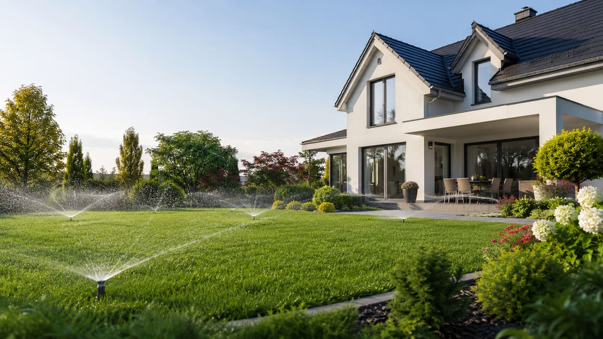
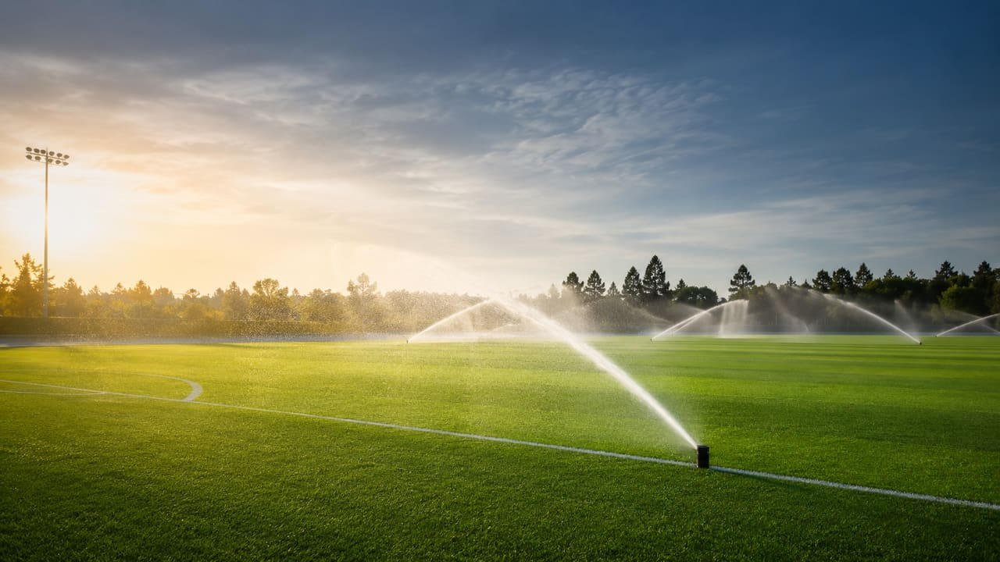
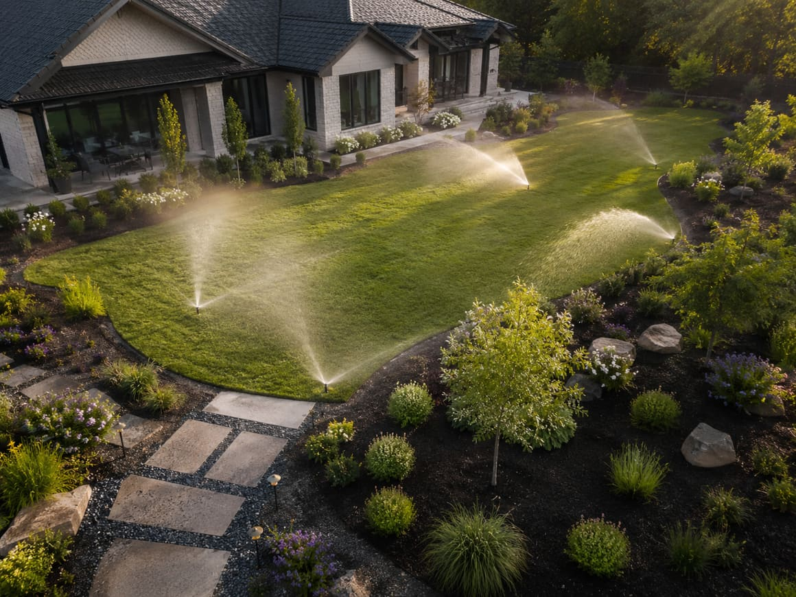
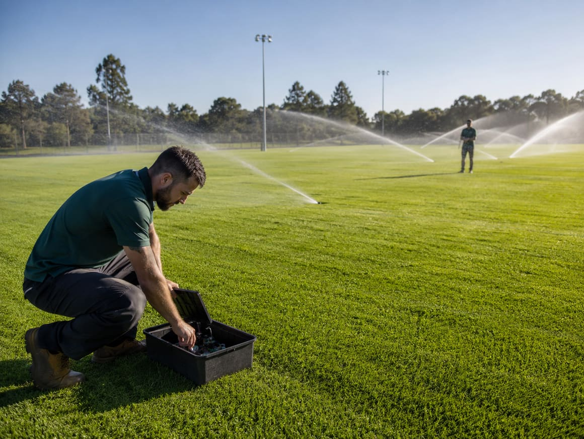
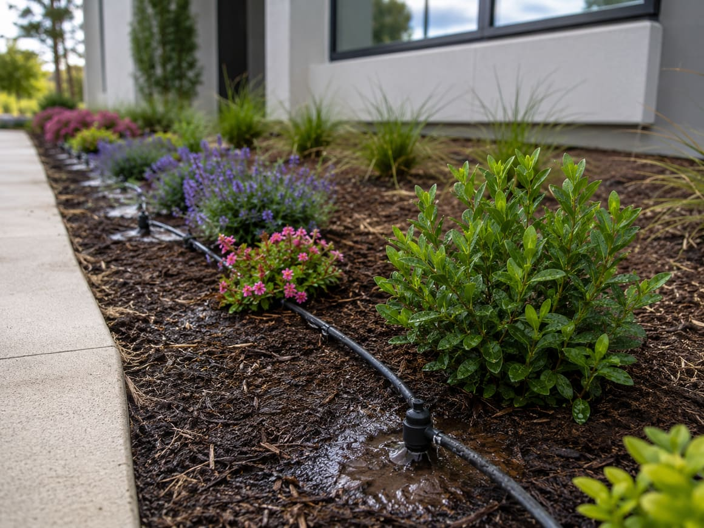
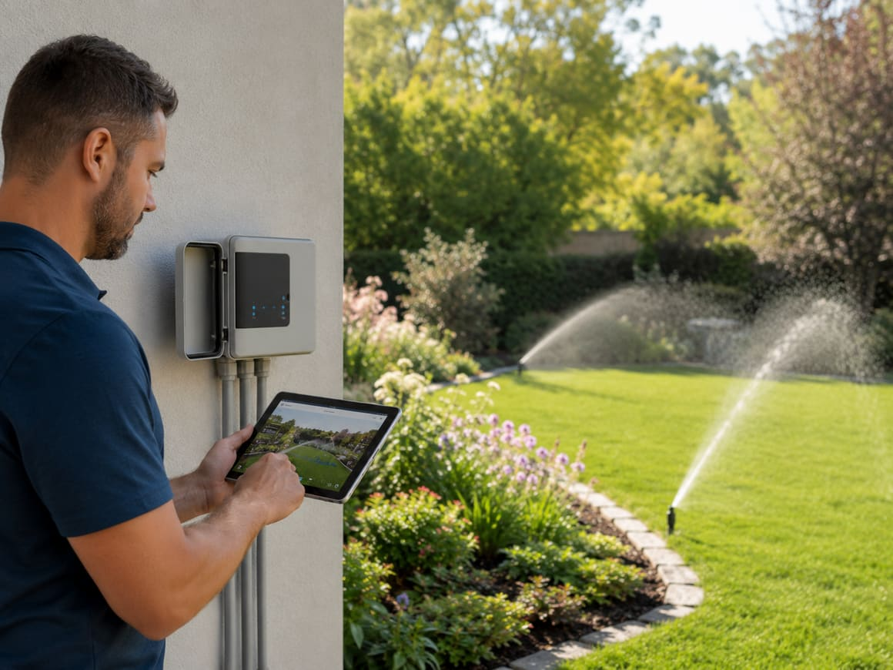
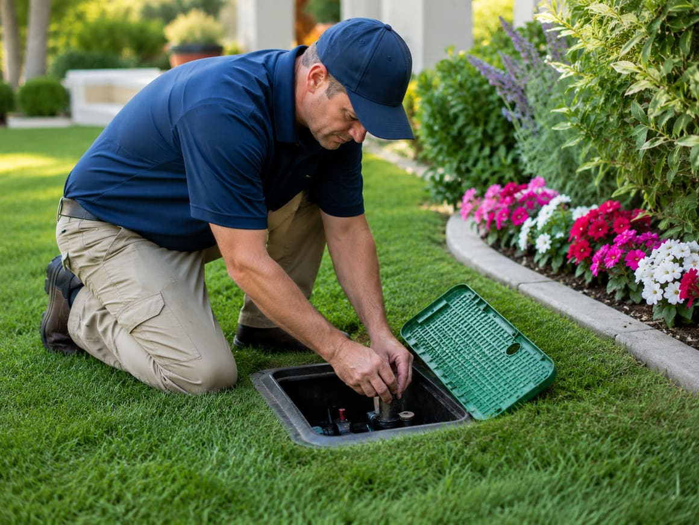
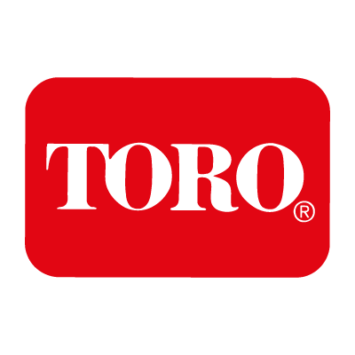
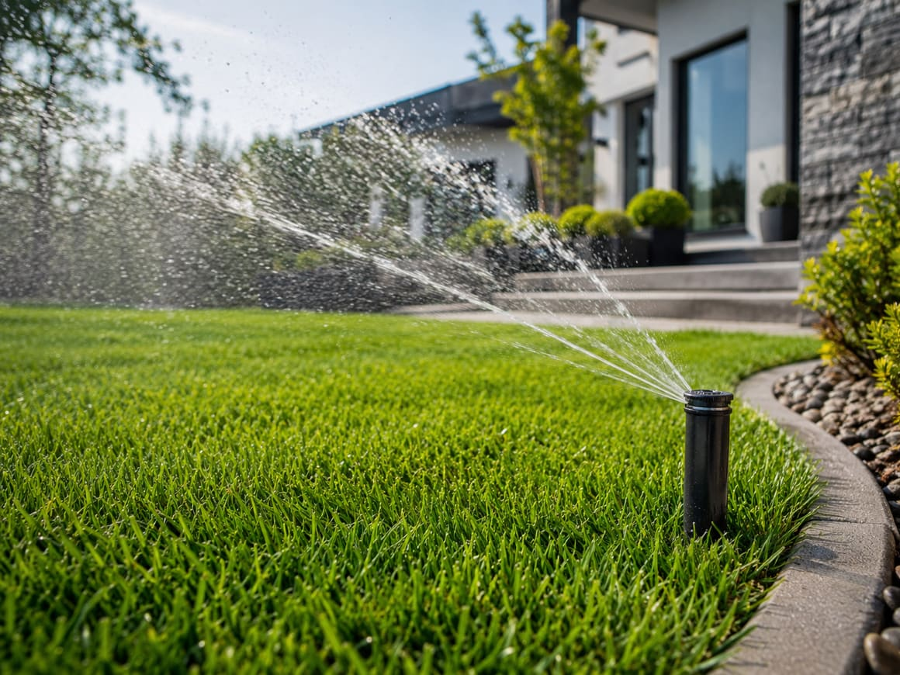
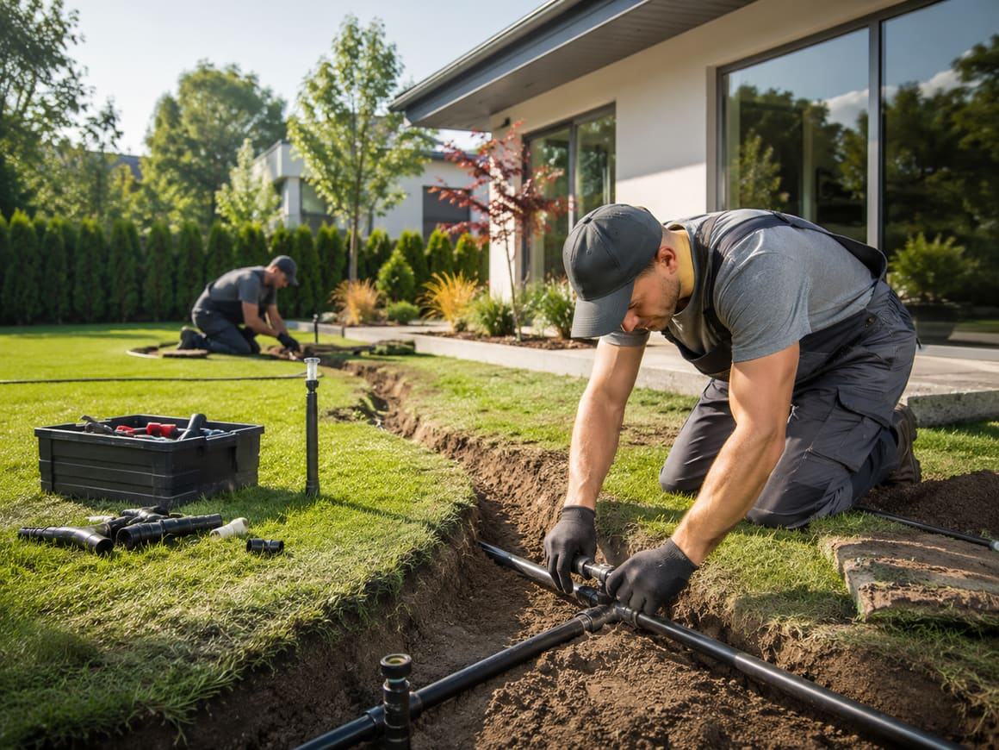

S/01
Záhrady domov
Kompletný návrh a realizácia závlahy trávnika a záhonov rodinného domu. Výsuvné postrekovače aj kvapková závlaha.

Navrhujeme a realizujeme automatické závlahové systémy pre záhrady, firemné areály a športové trávniky. Voda ide presne tam, kde má — v správnom čase a bez zbytočného plytvania.
Voda vnáša do záhrady život. My ju privedieme presne tam, kde má byť, a postaráme sa o zdravý rast aj počas vašej neprítomnosti.

Kompletný návrh a realizácia závlahy trávnika a záhonov rodinného domu. Výsuvné postrekovače aj kvapková závlaha.

Závlaha okolia firiem a verejnej zelene. Dodatočná inštalácia aj do už hotových plôch bez ich rozkopania.

Rovnomerné pokrytie veľkých trávnatých plôch, futbalové ihriská a športoviská so spoľahlivým výkonom.

Úsporné dávkovanie vody priamo ku koreňom záhonov, živých plotov a okrasných výsadieb, kvapka po kvapke.

Automatika so senzormi zrážok a vlhkosti. Systém polieva v noci či nad ránom, bez vašej účasti.

Celoročný servis: jarné spustenie a nastavenie, kontrola a vyfúknutie systému kompresorom pred zimou.
PRACUJEME LEN S OVERENÝMI ZNAČKAMI

Prídeme za vami, zmeriame plochu a zdroj vody. Posúdime prietok a tlak, základ každého funkčného systému.
Vypracujeme projekt rozdelený do sekcií a presnú cenovú ponuku podľa materiálu a rozsahu prác.
Uložíme potrubie, postrekovače a ventily, prepojíme riadiacu jednotku a všetko dôkladne odskúšame.
Odovzdáme systém, zaškolíme obsluhu a staráme sa o sezónne spustenie aj zazimovanie.
dokončených závlahových systémov za viac než 20 rokov praxe
úspora vody oproti ručnému polievaniu pri správnom nastavení
systém polieva automaticky, aj keď ste na dovolenke
rovnomerné pokrytie celej plochy, bez suchých a premokrených miest
Závlahové systémy sme realizovali pre firemné areály, hotely aj verejné inštitúcie na východnom Slovensku.

Pri spustení sekcie sa postrekovač vysunie nad trávnik a po dopolievaní sa zasunie naspäť do zeme.
Trysky a rotory presne pokryjú daný tvar plochy, od úzkeho pásu po celý kruh.
Plocha je rozdelená do okruhov podľa nárokov rastlín a výdatnosti zdroja vody.

Nenašli ste odpoveď? Zavolajte nám na +421 905 829 555.
Ušetrí čas aj vodu — pri správnom nastavení spotrebuje približne o polovicu menej vody než ručné polievanie. Zavlažuje rovnomerne, aj počas vašej neprítomnosti, a vypne sa, keď trávnik vodu nepotrebuje.
Návratnosť investície je pri mestskom vodovode približne jeden rok, pri vlastnej studni ešte rýchlejšia. Systém je navyše takmer neviditeľný a zvyšuje hodnotu nehnuteľnosti.
Najúčinnejšia je závlaha v skorých ranných hodinách, prípadne neskoro večer. Cez deň na priamom slnku sa zavlažovať neodporúča — kvapky vody fungujú ako lupa a môžu spáliť listy.
Primeraná dávka sa líši podľa počasia. Na jar a jeseň spravidla stačí zavlažovať 2 až 3-krát týždenne tak, aby bola pôda navlhčená do hĺbky 1,5 až 2 cm. Počas horúčav sa odporúča denná závlaha do hĺbky 3 až 4 cm.
Cena závisí od veľkosti a členitosti plochy a od zdroja vody. Predbežný návrh a rozpočet automatickej závlahy vám vypracujeme zdarma — stačí nás kontaktovať.
Inštalujeme komponenty najkvalitnejších amerických značiek dostupných na slovenskom trhu — Hunter, Irritrol, Toro a Rain Bird. Naši pracovníci sa každoročne školia v oblasti závlahovej a čerpacej techniky.
V štyroch krokoch: obhliadka a zameranie, návrh s cenovou ponukou, samotná realizácia (zemné práce robíme drážkovacími strojmi do hĺbky 40 cm) a napokon odovzdanie so zaškolením a následný servis.
Áno. Staráme sa o jarné spustenie a nastavenie systému aj o jeho vyfúknutie kompresorom pred zimou, aby vydržal dlhé roky.
Áno. Okrem závlahových systémov ponúkame aj stavebnú činnosť (maliarske práce, sadrokartón, suché omietky) a montáž záhradného LED osvetlenia do 12 V.
Sídlime v Prešove a závlahové systémy realizujeme v Prešove a okolí, ako aj inde na východnom Slovensku.
Pošlite nám rozmery alebo plán pozemku a pripravíme návrh závlahy aj nezáväznú cenovú ponuku.
Zavolať +421 905 829 555 →